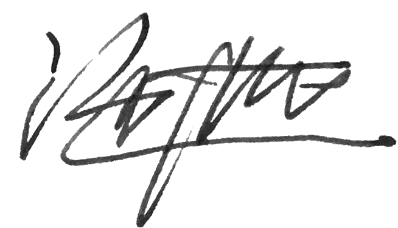

序
为了更好地为城市片区、开发区、园区等各类有志于提升区域创新力的开发运营主体服务，TOP创新区研究院基于五“高”法则开发了全球创新区营造诊断系统，供测评其开发运营区域的创新力。
感谢您的参与，让我们携手共创城市创新区新篇章。
施道红

为了更好地为城市片区、开发区、园区等各类有志于提升区域创新力的开发运营主体服务，TOP创新区研究院基于五“高”法则开发了全球创新区营造诊断系统，供测评其开发运营区域的创新力。
感谢您的参与，让我们携手共创城市创新区新篇章。